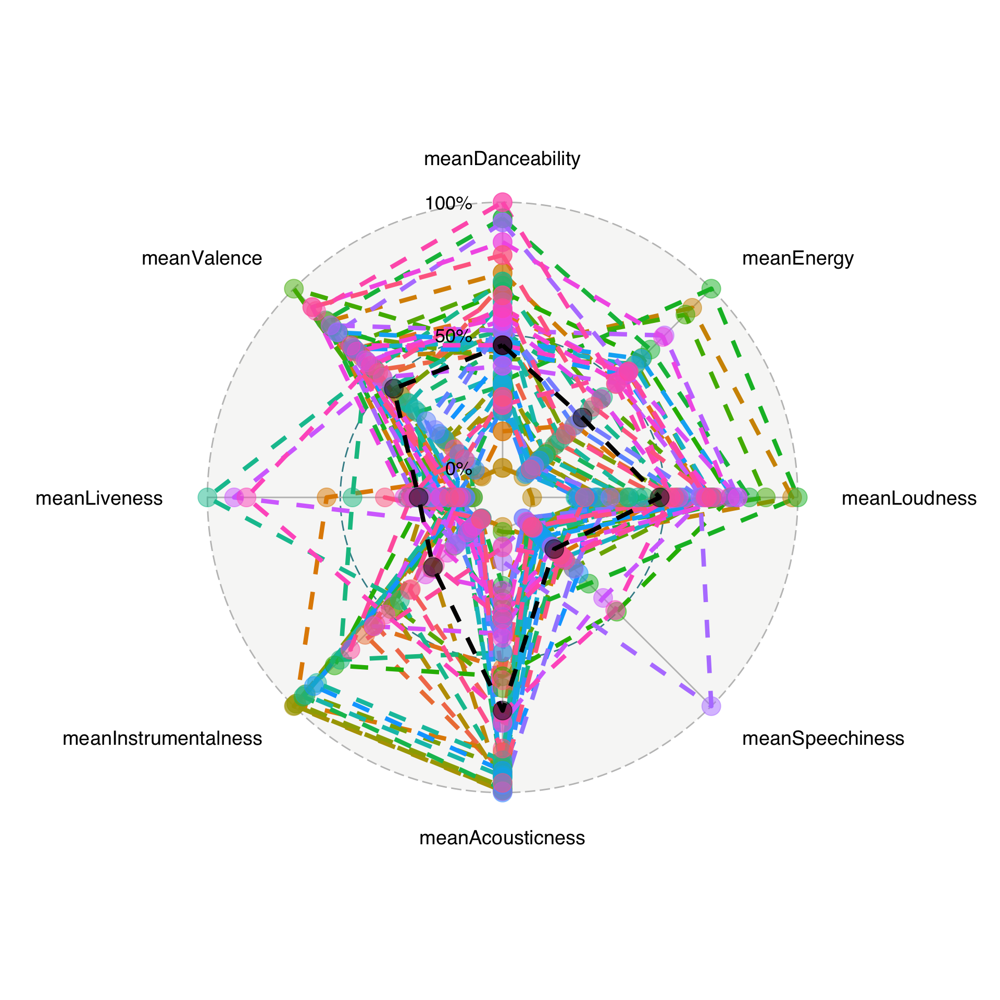
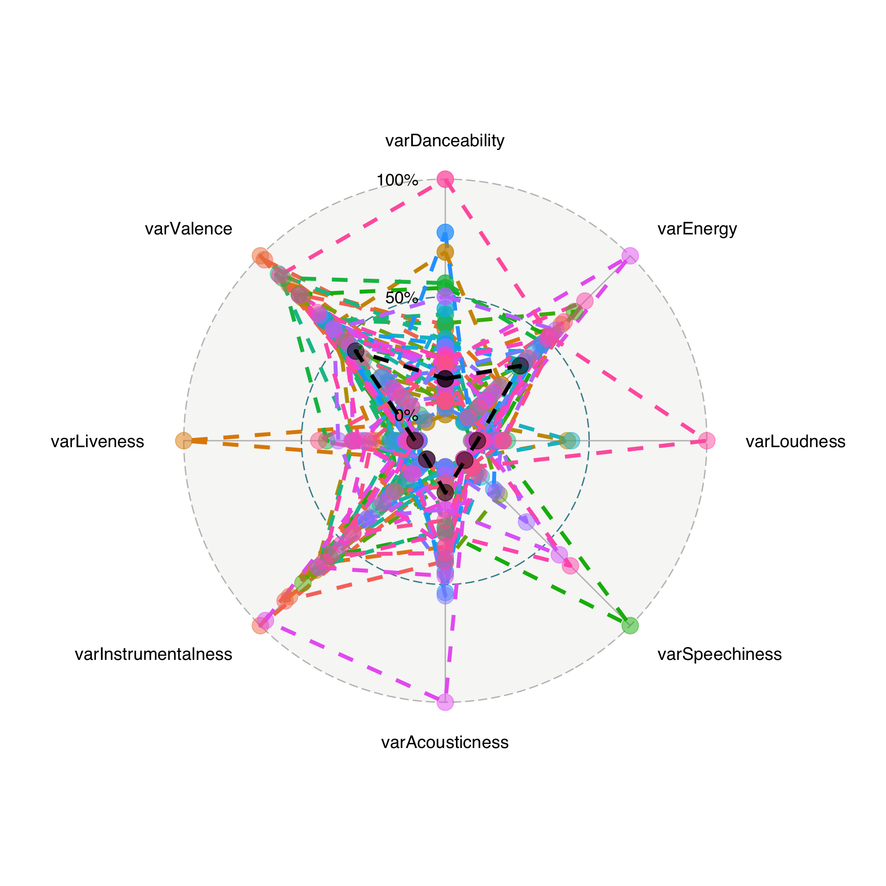
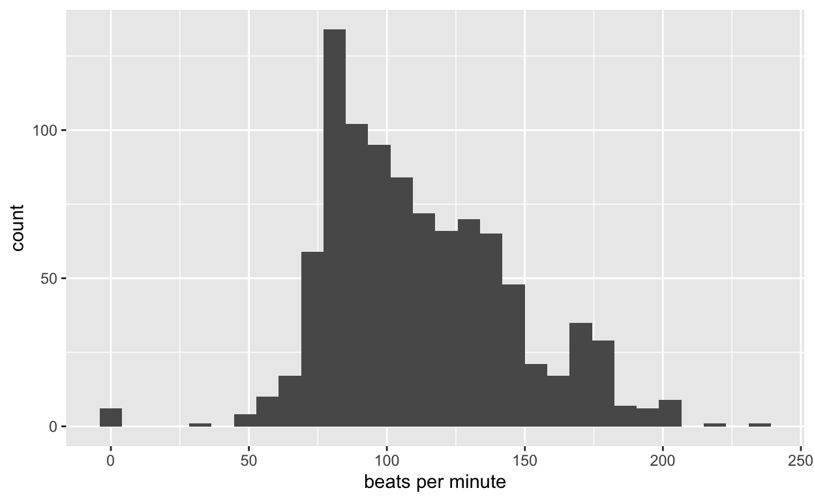

I signed up to get Dan Kopf’s “Golden Stats Warrior” newsletter, a newsletter that provides data driven insight into the Bay Area. You can sign up too here.
The last edition looked at the greatest albums from the Bay Area. Of albums by Bay Area natives, which ones got five stars on AllMusic? Being a bit of a music nerd, I wanted to dig in further. Kopf was kind enough to share the data with me so that I could do some more exploring.
I decided to use the Spotify API to get audio features for all of the songs on these albums. Then we can see if there is a quintessential Bay Area sound.
spotify_client_id="" ## put yours here
spotify_client_secret="" ## put yours here
access_token <- get_spotify_access_token(client_id=spotify_client_id,client_secret=spotify_client_secret)
First we grab the audio features for any album by the Bay Area artists who scored a five on at least one album.
helper <- function(x) {
get_artist_audio_features(x, include_groups = "album", authorization = access_token)
}
safe_spotify <- safely(helper) ## don't want it to crash if there is a bad request
allInfoGreatest <- unique(greatest$Artist.Name) %>% map(safe_spotify)
save(allInfoGreatest, file = "allInfoGreatest.RData")
testSly <- helper("family stone") ## Sly & the Family Stone gets weird, so do them seperately
Then we clean that up a bit.
load(file = "allInfoGreatest.RData")
clean <- lapply(allInfoGreatest, function(x) {
x$result
})
clean2 <- do.call("rbind", clean)
clean2$album_release_date <- as.Date(clean2$album_release_date)
clean2$year <- year(clean2$album_release_date)
testSly$album_release_date <- as.Date(testSly$album_release_date)
testSly$year <- year(testSly$album_release_date)
clean3 <- rbind(clean2, testSly)
save(clean3, file = "clean3.RData")
Now we get things prepped for merging based on names. This could get ugly.
Inevitably, it did. These were the ones where I had to do some manual fudging to get things right.
greatest$Album.Name[which(greatest$Album.Name == "handel: messiah [2008 recording]")] <- "handel: messiah"
greatest$Artist.Name[which(greatest$Artist.Name == "dave brubeck")] <- "the dave brubeck quartet"
greatest$Album.Name[which(greatest$Album.Name == "lorraine at emmanuel")] <- "lorraine hunt lieberson at emmanuel"
greatest$Album.Name[which(greatest$Album.Name == "recital: lorraine hunt lieberson at ravinia")] <- "recital at ravinia"
greatest$Album.Name[which(greatest$Album.Name == "red house painters (roller-coaster)")] <- "red house painters i"
greatest$Album.Name[which(greatest$Album.Name == "john adams: harmonielehre; short ride in a fast machine")] <- "adams: harmonielehre - short ride in a fast machine"
greatest$Artist.Name[which(greatest$Artist.Name == "vince guaraldi")] <- "vince guaraldi trio"
greatest$Album.Name[which(greatest$Album.Name == "cast your fate to the wind: jazz impressions of black orpheus")] <- "cast your fate to the wind"
greatest$Album.Name[which(greatest$Album.Name == "a boy named charlie brown [original soundtrack]")] <- "a boy named charlie brown"
greatest2 <- rbind.data.frame(greatest, greatest[which(greatest$Album.Name == "cast your fate to the wind"), ])
greatest2$Album.Name[nrow(greatest2)] <- "jazz impressions of black orpheus" ## split into two on Spotify
Actually do the matching.
helper <- function(x) {
use <- greatest2[x, c("Album.Name", "Artist.Name", "Year")]
test <- subset(clean3, artist_name == use$Artist.Name)
toReturn <- test[agrep(use$Album.Name, test$album_name), ] ## sort of fuzzy match
return(toReturn)
}
getData <- lapply(1:nrow(greatest2), helper)
test <- lapply(getData, nrow)
Which ones didn’t work out?
tt = greatest[which(unlist(test)==0),]
kable(tt) %>% kable_styling()
| Artist.URL | Year | City | Artist.Name | Score | Album.Name | |
|---|---|---|---|---|---|---|
| 658 | /artist/marty-paich-mn0000858709 | 1956 | Oakland | marty paich | 5 | sings fred astaire |
| 933 | /artist/russell-garcia-mn0000808436 | 1958 | Oakland | russell garcia | 5 | fantastica: music from outer space |
| 1032 | /artist/souls-of-mischief-mn0000041857 | 1993 | Oakland | souls of mischief | 5 | 93 ’til infinity |
| 1225 | /artist/tony%21-toni%21-ton%C3%A9%21-mn0000790667 | 1990 | Oakland | tony! toni! toné! | 5 | the revival |
| 1457 | /artist/david-murray-mn0000182855 | 1982 | Berkeley | david murray | 5 | murray’s steps |
| 2043 | /artist/los-tigres-del-norte-mn0000806336 | 1989 | San Jose | los tigres del norte | 5 | triunfo solido |
| 2294 | /artist/andra%C3%A9-crouch-mn0000031263 | 1978 | San Francisco | andraé crouch | 5 | andrae crouch & the disciples |
| 2453 | /artist/big-brother-the-holding-company-mn0000758943 | 1968 | San Francisco | big brother & the holding company | 5 | cheap thrills |
| 2791 | /artist/constantine-orbelian-mn0000937363 | 2017 | San Francisco | constantine orbelian | 5 | georgy sviridov: russia cast adrift |
| 2910 | /artist/del-sol-string-quartet-mn0000335603 | 2009 | San Francisco | del sol string quartet | 5 | marc blitzstein: first life - rare early works |
| 3518 | /artist/jeannette-sorrell-mn0001286718 | 2011 | San Francisco | jeannette sorrell | 5 | come to the river: an early american gathering |
| 4520 | /artist/leon-fleisher-mn0001209232 | 2009 | San Francisco | leon fleisher | 5 | hindemith: klaviermusik mit orchester; dvorák: symphony no. 9 “from the new world” |
| 4588 | /artist/linda-tillery-mn0000594698 | 1993 | San Francisco | linda tillery | 5 | secrets |
| 4635 | /artist/lorraine-hunt-lieberson-mn0001472476 | 2007 | San Francisco | lorraine hunt lieberson | 5 | songs by mahler, handel & peter lieberson |
| 5492 | /artist/ruggiero-ricci-mn0000249876 | 1985 | San Francisco | ruggiero ricci | 5 | franck: violin sonata; prokofiev: violin sonata op. 94a |
| 6281 | /artist/vince-guaraldi-mn0000201678 | 1966 | San Francisco | vince guaraldi trio | 5 | it’s the great pumpkin, charlie brown |
I checked, and this wasn’t just an issue of merging on slightly different names. I couldn’t find the analogue in the albums pulled from Spotify based on the artist names. We only lost 16 out of 56, not bad!
Now we get to the fun stuff. What kind of features do we have? We want to get the average and variability across songs, per album.
characteristics <- c("danceability", "energy", "loudness", "speechiness", "acousticness", "instrumentalness", "liveness", "valence")
charSum <- dataINeed[, c(characteristics, "album_name")] %>%
group_by(album_name) %>%
summarise(
meanDanceability = mean(danceability), meanEnergy = mean(energy),
meanLoudness = mean(loudness), meanSpeechiness = mean(speechiness),
meanAcousticness = mean(acousticness), meanInstrumentalness = mean(instrumentalness), meanLiveness = mean(liveness), meanValence = mean(valence),
varDanceability = var(danceability), varEnergy = var(energy),
varLoudness = var(loudness), varSpeechiness = var(speechiness),
varAcousticness = var(acousticness), varInstrumentalness = var(instrumentalness), varLiveness = var(liveness), varValence = var(valence)
)
## add mean of everything in black
add <- cbind.data.frame(album_name = "avg", t(apply(dataINeed[, c(characteristics)], 2, mean)))
meanStuff <- charSum[, 1:9]
names(add) <- names(meanStuff)
meanStuff <- rbind.data.frame(meanStuff, add)
varStuff <- charSum[, c(1, 10:17)]
Now, I wanted to make some cool radar plots, inspired by music analysis like this. You can also find descriptions of the features there.
Of course there is a gg version, but I had to tweak the internal functionality to get the plots to look like what I wanted them to. This gets a bit gnarly, so I’m compartmentalizing that code over here.
I also snagged some code from the internal ggradar so that I could add a line representing the average across all albums in black. That stuff lives in the following helper function.
helperPlot <- function(base) {
grid.min <- 0 # , # 10,
grid.mid <- 0.5 # , # 50,
grid.max <- 1 # , # 100,
centre.y <- grid.min - ((1 / 9) * (grid.max - grid.min))
plot.data <- as.data.frame(toP[nrow(toP), ])
names(plot.data)[1] <- "group"
if (!is.factor(plot.data[, 1])) {
plot.data[, 1] <- as.factor(as.character(plot.data[, 1]))
}
plot.data.offset <- plot.data
plot.data.offset[, 2:ncol(plot.data)] <- plot.data[, 2:ncol(plot.data)] + abs(centre.y)
# print(plot.data.offset)
# (b) convert into radial coords
group <- NULL
group$path <- CalculateGroupPath(plot.data.offset)
group.line.width <- 1.5
group.point.size <- 6
# ... + group (cluster) 'paths'
base <- base + geom_path(
data = group$path, aes(x = x, y = y, group = group),
size = group.line.width, lty = 2, col = "black"
)
# ... + group points (cluster data)
base <- base + geom_point(data = group$path, aes(x = x, y = y, group = group), size = group.point.size, alpha = 0.5, col = "black")
return(base)
}
Acousticness for the win! However, there are quite a few albums that hit high instrumentalness (makes sense, lots of jazz and classical music), high energy, danceability (they aren’t called Funky Divas for nothing), and loudness (Green Day, anyone?)
toP <- meanStuff %>% mutate_at(vars(-album_name), rescale)
base <- ggradar2(toP[-nrow(toP), ])
helperPlot(base)

Which album is most like the average five-star Bay Area album? Dave Brubeck’s “Time Out”
This isn’t particularly suprising has Brubeck has the third highest number of albums on the five-star list.
test=as.matrix(dist(toP[,-1]))
#toP[which.min(test[nrow(toP),-ncol(test)]),]
dataINeed %>% group_by(album_id) %>% summarise(count=n(),artist=artist_name[1]) %>% group_by(artist) %>% summarise(count=n()) %>% arrange(desc(count))
# A tibble: 24 x 2
artist count
<chr> <int>
1 vince guaraldi trio 9
2 lorraine hunt lieberson 8
3 the dave brubeck quartet 6
4 leon fleisher 5
5 moby grape 5
6 david murray 3
7 san francisco symphony 3
8 chanticleer 2
9 grateful dead 2
10 green day 2
# … with 14 more rowsThe Bay Area likes variability in valence (positivity of sound).
toP = varStuff %>% mutate_at(vars(-album_name), rescale)
base = ggradar2(toP[-nrow(toP),])
helperPlot(base)

Which album has the variability most like the average five-star Bay Area album? The Grateful Dead’s “American Beauty” (from SF)
What about the Bay Area pace? Let’s look at tempo.
ggplot(dataINeed, aes(x=tempo)) + geom_histogram()+xlab("beats per minute")

What song is most like the average tempo? Ironically, Brubeck’s St. Louis Blues. Brubeck is a Concord original.
mean(dataINeed$tempo)
[1] 111.9667#dataINeed[which.min(abs(dataINeed$tempo-mean(dataINeed$tempo))),]
#blogdown::shortcode("youtube", "tq2YENV_Q9s")
But there is a peak in the tempo distribution that is slower than the mean. What song is most like this mode? Gotta love a good cover of The Beatles’ “Yesterday” by Oakland’s En Vogue.
#which.max(table(round(dataINeed$tempo)))
# mode
#dataINeed[which.min(abs(dataINeed$tempo-80)),]
#blogdown::shortcode("youtube", "k1PiJAeydLs")
What about those few faster paced jams? Here is an inspirational song from San Francisco’s Moby Grape.
#dataINeed[which.min(abs(dataINeed$tempo-200)),]
#blogdown::shortcode("youtube", "9-RKXCvb5E")
What is an example of a song that is in the most prominent key? Oakland’s Digital Underground gives us “Doowutchyalike.”
#which.max(table(dataINeed$key_mode))
#dataINeed[which(dataINeed$key_mode=="A major")[1],]
#blogdown::shortcode("youtube", "5P4WZHlHsyk")
There is plenty more to dig into here.
But those are for another day…
Thanks again to Dan Kopf (@dkopf) for sharing the data! Thoughts, comments, suggestions, etc. welcome –> @sastoudt.